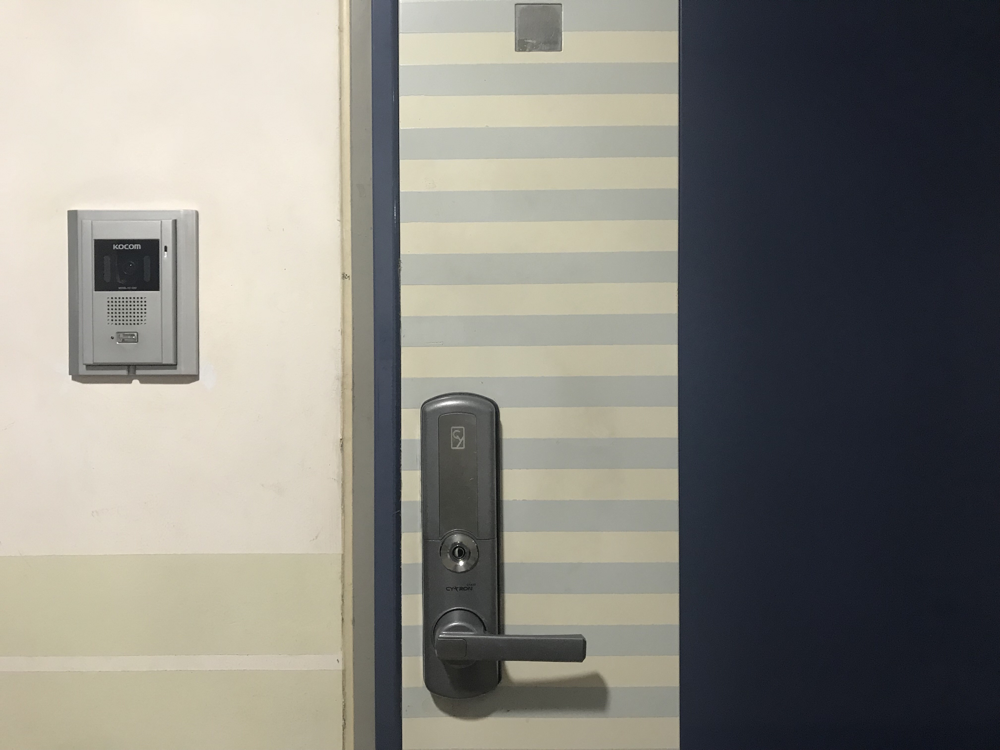

언론정보학과 박현

한국보건사회연구원(보사연)에서 9월경 실행한 ‘2018년 전국출산력 및 가족보건·복지실태조사(출산력 조사)’가 물의를 빚었다. 이 조사는 1964년에 시작되어 출산력 및 출산행태의 변화와 그에 영향을 미치는 요인들을 파악해 정부의 인구정책, 가족보건정책, 가족복지정책 등을 수립하고 평가하기 위해 매 3년 주기로 하고 있다.
논란은 한 네티즌의 현관문에 붙어있던 재방문 안내장이 SNS를 통해 퍼지며 시작되었다. 안내장에 가임기에 해당하는 출생연도가 적혀있어 혼자 사는 여성들이 범죄에 노출될 가능성이 높아진다는 비판이 제기된 것이다. 한 페미니즘 소모임에 속한 신영채 씨(21, 여)는 “자취를 하거나 혼자 사는 여성들이 범죄 노출에 느끼는 공포가 만연한 가운데 해당 방식을 사용한 것은 여성의 실질적인 삶에 대한 이해가 부족한 것으로 보인다”고 말했다. 이에 보사연은 조사 대상이 (1)15~49세 기혼 여성, (2)20~44세 미혼 남성, (3)20~44세 미혼 여성으로, 재방문 안내장은 조사구 내 모든 가구에 붙이고 있다고 발표했다. 또한 논란을 잠재우기 위해 부재중 스티커 외부 부착 대신 별도 봉투에 담아 우편함에 넣는 것으로 방식을 변경하겠다고 덧붙였다.
하지만 논란은 이에 그치지 않고 조사 문항으로 번졌다. 특히 5번 문항은 ‘남편이 할 일은 돈을 버는 것이고 아내가 할 일은 가정과 가족을 돌보는 것이다’나 ‘아내는 자신의 경력을 쌓기보다는 남편이 경력을 쌓을 수 있도록 도와주는 것이 더 중요하다’ 등의 내용을 포함하고 있어 전통적인 성 역할을 고착화하는 것이 아니냐는 의견이 제기되었다. 이에 보사연은 전통적인 성 역할을 강요하는 문항이 아니라 시대의 흐름에 따라 그런 역할관이 얼마나 변화하고 있는지를 살펴보기 위한 것이라고 해명했다. 이와 관련해 서울대학교 교수 변문숙 씨는 “서술방식이 젠더 중립적이지 않다”며 “경력과 관련해 성에 따라 한 쪽이 중요하다고 생각할 수 있느냐, 또는 사회적 지위나 수입이 더 나은 쪽을 위해서 한 쪽이 희생해도 좋다고 생각하느냐의 식으로 문항이 구성되어야 한다”고 말했다. “차이는 미묘할지라도 문항이 젠더 중립적이고 답변자를 존중하는 방식으로 쓰여야 한다”고도 했다.
보사연 측은 조사 중에 조사명과 조사내용을 변경하는 것은 어렵다며, 향후에 성인지적 관점과 가족의 다양성, 그리고 국민의 삶의 변화를 반영하는 새로운 문항을 개발하겠다며 발표를 일단락했다.